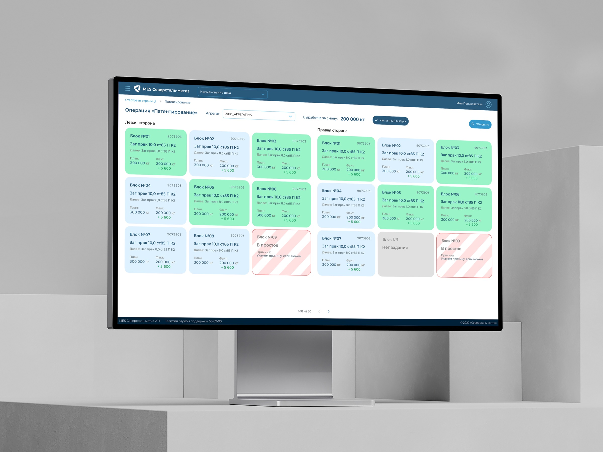
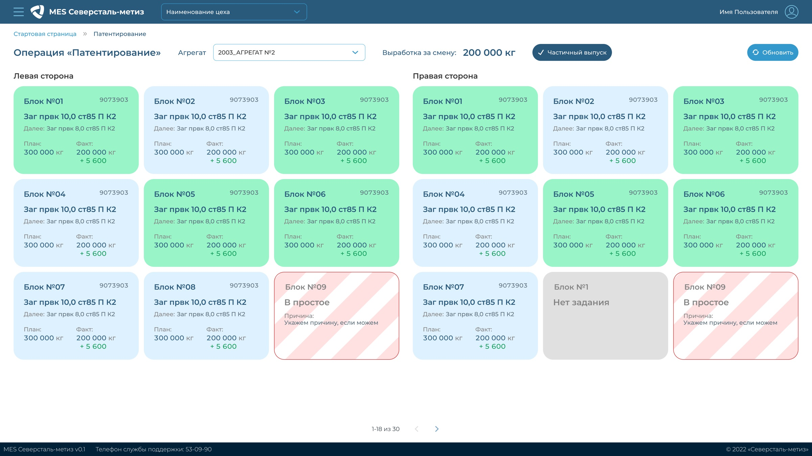
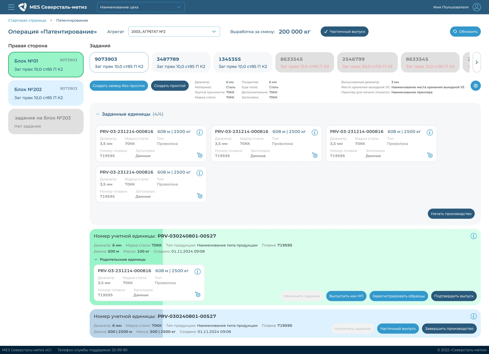
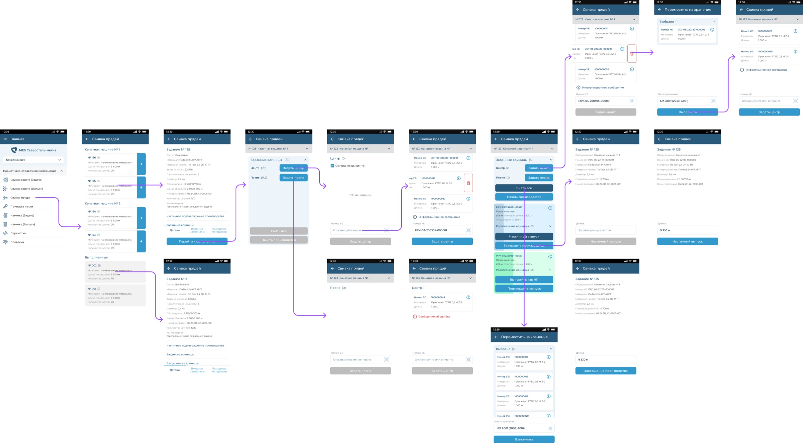
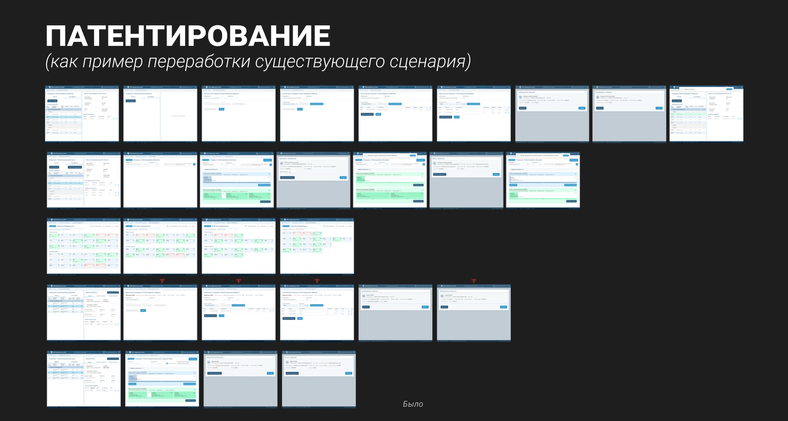
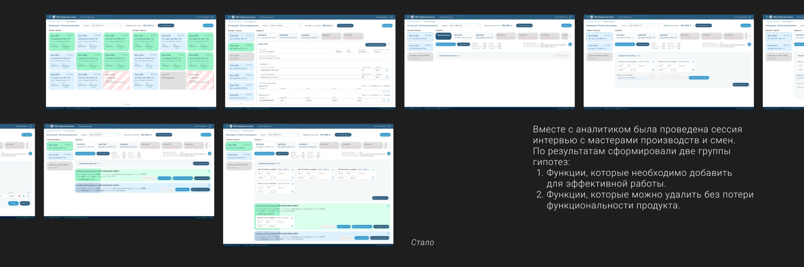

−31%
времени взаимодействия рабочих с системой
- Запрос бизнеса
- Сократить время взаимодействия рабочих с системой — первая цель проекта.
- Ограничение
- Снимать метрики прямо в системе было нельзя: жёсткие требования службы безопасности.
Северсталь · MES · металлургическое производство
Через эту систему операторы, мастера и технологи ведут выпуск метизной продукции: задания, выработку, простои. Задача звучала так: «чтобы стало лучше, но ничего не сломалось». Система работает непрерывно вместе с производством. Ею пользуются 1500+ рабочих на двух площадках, поэтому переключить всё одним релизом было нельзя.
MES состоит из множества модулей, связанных с другими системами предприятия. Устаревшие компоненты, разная логика в каждом модуле, нет единого плана проекта.
Интервью с мастерами, тесты сценариев до разработки, CJM и роадмап, дизайн-система, сценарии для десктопа, мобильного и терминала. Руководил двумя дизайнерами.
Редизайн по модулям, а не «большим взрывом», и один интерфейс с режимами плотности для мастера за компьютером и оператора у терминала.
−31% времени рабочих в системе, документооборот в 3 раза быстрее, доступность системы 7,2 → 8,6 из 10.

01 · Результаты
времени взаимодействия рабочих с системой
быстрее документооборот персонала
оценка доступности системы
оценка стабильности системы
времени на разработку интерфейсов
обращений с жалобами на удобство
02 · Контекст и проблема
MES «Северсталь-метиз» — система, в которой цех получает производственные задания, фиксирует выработку по агрегатам и блокам, регистрирует простои и выпуск продукции. Модули обмениваются данными с другими системами предприятия, поэтому ошибка в интерфейсе превращается в ошибку в учёте.
Когда я пришёл в проект, было три проблемы:
Плюс человеческий фактор: часть ответственных лиц со стороны заказчика не верила в редизайн и видела в нём риск для плана выпуска.
Главное ограничение: производство нельзя остановить ради редизайна. Любое изменение должно было выходить, не останавливая смену.
03 · Исследование
Оператор занят агрегатом и подходит к терминалу на несколько секунд. Состояние линии он считывает на ходу, с полутора-двух метров.
Что это значит для дизайна
Статус блока должен считываться за секунду: крупный номер, цвет и паттерн. Простой — штриховка, а не только красный цвет: так статус различим при дальтонизме и на бликующем экране.
Точные нажатия невозможны: промахи по мелким кнопкам были главной причиной ошибочных действий на старом интерфейсе.
Что это значит для дизайна
В терминальном режиме зоны нажатия рассчитаны на палец в перчатке, опасные действия разнесены, а подтверждение спрашиваем только для необратимых операций.
Обязательное поле блокировало работу, и операторы выбирали первую попавшуюся причину, чтобы продолжить. Данные о простоях были недостоверными.
Что это значит для дизайна
Фиксация простоя не блокирует работу: «Укажи причину, если можешь», а дополнить её можно позже. Лучше честное «не указано», чем неверная причина.
Отвечая на вопрос «где проблема», люди показывали рукой на агрегат: «левая сторона, третий блок».
Что это значит для дизайна
Экран операции повторяет физическую раскладку агрегата: левая и правая стороны, блоки по номерам.
Самый частый страх в интервью — «опять всё переделают, и мы встанем». Сопротивление новому было главным риском проекта.
Что это значит для дизайна
Выпуск по модулям и тесты прототипов с будущими пользователями до разработки. Самые активные участники тестов стали помогать коллегам с переходом.
Как я рассуждал
Заказчик просил «перерисовать устаревший интерфейс». Интервью показали, что людей пугает не старый вид, а то, что их снова переучат и цех встанет. Поэтому критерием успеха я сделал не «красивее», а «оператор почти не замечает переезда»: те же сценарии и места ключевых действий, но меньше ошибок и лишних шагов.
Сопротивление снимают данные, а не макеты. Часть ответственных лиц со стороны заказчика была против изменений. Я сделал обязательной проверку сценариев пользовательскими тестами до разработки, и спор о вкусах сменился разговором о результатах тестов. Это подняло доверие к команде разработки.
Две группы гипотез вместо списка пожеланий. Вместе с аналитиком провёл интервью с мастерами производств и смен. По итогам разделили гипотезы на две группы: функции, которые нужно добавить для работы, и функции, которые можно убрать без потери возможностей продукта. По каждому сценарию составил CJM, из них собрался новый роадмап.
04 · Развилки
05 · Решение

Экран операцииГлавный экран оператора у терминала

Задания и выпускДесктопный режим: мастер смены

Мобильные сценарииФлоу для мастеров на обходе цеха
Пример переработки существующего сценария. Функции, без которых можно обойтись, убрали, а нужные для работы добавили.

БылоВсе экраны сценария до редизайна

СталоТот же сценарий после редизайна
Начал с аудита: собрал все варианты кнопок, полей и таблиц из разных модулей. Их оказалось больше, чем нужно. Дальше — токены цвета, типографики и плотности, затем компоненты. Режим плотности — это набор токенов, а не отдельные компоненты, поэтому каждый новый экран сразу работает и на терминале, и на десктопе.
Параллельно навели порядок в Figma: единая структура файлов, библиотека, правила передачи в разработку. Вместе это дало −15% времени на разработку интерфейсов.
Двум дизайнерам я отдал модули целиком, а не отдельные экраны: каждый вёл свой сценарий от интервью до приёмки. Общими были дизайн-система и еженедельное дизайн-ревью. Поэтому после моего ухода проект продолжил развиваться в том же направлении.
06 · Ретроспектива
Снимать метрики прямо в системе было нельзя, поэтому часть эффекта видна только через опросы и аудит. Теперь первым делом договариваюсь, что и как мы будем измерять.
Сначала сделали компоненты под десктоп, и часть из них потом переделывали под терминальный режим. Плотность стоило заложить в токены с первого дня.
Мастера помогали коллегам переходить на новый интерфейс. Если бы они участвовали в тестах с первого модуля, сопротивление было бы меньше.
Главный вывод: в промышленном интерфейсе выигрывает не самый красивый экран, а тот, который оператор считывает за секунду в перчатках и под шум цеха. И редизайн, который не останавливает производство ни на смену.
Другие кейсы
Контакты
Ищу роль Senior Product Designer. На звонке расскажу, что не вошло в кейс и что под NDA.